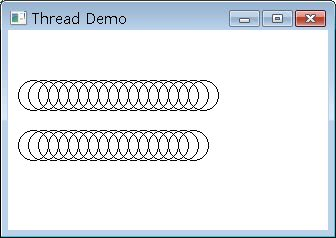

一個進程（Process）是一個包括有自身執行位址的程式，在一個多工的作業系統中，可以分配CPU時間給每一個進程，CPU在片段時間中執行某個進程，然後下一個時間片段跳至另一個進程去執行，由於轉換速度很快，這使得每個程式像是在同時進行處理一般。
一個執行緒是進程中的一個執行流程，一個進程中可以同時包括多個執行緒，也就是說一個程式中同時可能進行多個不同的子流程，這使得一個程式可以像是同時間 處理多個事務，例如一方面接受網路上的資料，另一方面同時計算資料並顯示結果，一個多執行緒程式可以同時間處理多個子流程。
在Qt中，有許多類別，其本身在一些操作上即設計為非同步，透過Signal與Slot，可以讓您不用了解多執行緒，也可以實現非阻斷的操作，但某些時候，您仍必須親自實作多執行緒功能。
在Qt中要實現執行緒功能，可以繼承QThread類別，並重新定義run()方法，之後要啟動一個執行緒，則建構這個自訂的物件，並執行start()方法。
下面這個程式是個簡單的程式，您可以看到如何繼承QThread、重新定義run()方法及如何啟動執行緒，程式中將以兩個執行緒「同時」對一個QPixmap畫圓，顯示兩個「同時」進行的流程：
- CircieThread.h
#ifndef CIRCLETHREAD_H
#define CIRCLETHREAD_H
#include <QThread>
class QLabel;
class QPixmap;
class CircleThread : public QThread {
Q_OBJECT
public:
CircleThread(QLabel *label, QPixmap *pixmap, int y);
protected:
void run();
private:
QLabel *label;
QPixmap *pixmap;
int y;
};
#endifCircleThread建構函式中，QPixmap是QLabel將顯示的圖片，而y值是畫圓時的位置，CircleThread實作如下：
- CircleThread.cpp
#include "CircleThread.h"
#include <QPainter>
#include <QLabel>
#include <QPixmap>
CircleThread::CircleThread(QLabel *label, QPixmap *pixmap, int y) {
this->label = label;
this->pixmap = pixmap;
this->y = y;
}
void CircleThread::run() {
QPainter painter(pixmap);
for(int i = 10; i < 300; i += 10) {
painter.drawEllipse(i, y, 30, 30);
label->setPixmap(*pixmap);
QThread::msleep(500);
}
}在run()方法中，將在QPixmap上建構QPainter，然後依序畫10個圓，接著將畫好的QPixmap再次設置給 QLabel，以重新在QLabel上顯示新的繪製畫面。QThread::msleep()可以令目前的執行緒暫停所設置的毫秒數。您可以撰寫以下的程 式來使用CircleThread：
- main.cpp
#include <QApplication>
#include <QLabel>
#include "CircleThread.h"
int main(int argc, char *argv[]) {
QApplication app(argc, argv);
QLabel *label = new QLabel;
label->resize(320, 200);
QPixmap pixmap(320, 200);
pixmap.fill(Qt::white);
CircleThread *thread1 = new CircleThread(label, &pixmap, 50);
CircleThread *thread2 = new CircleThread(label, &pixmap, 100);
label->setWindowTitle("Thread Demo");
label->show();
thread1->start();
thread2->start();
return app.exec();
}啟動執行緒是使用start()方法，下圖為執行時的參考畫面，您可以看到一個視窗，兩個圓在「同時」繪製，雖說是同時，其實也只是錯覺而已，其實是CPU往來兩個流程之間不斷的進行繪製圓的動作而已。：
